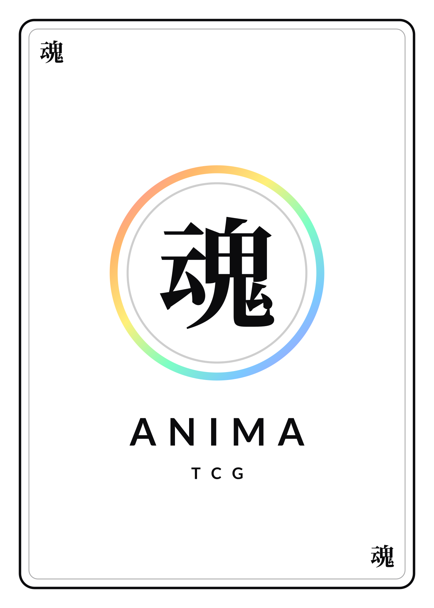
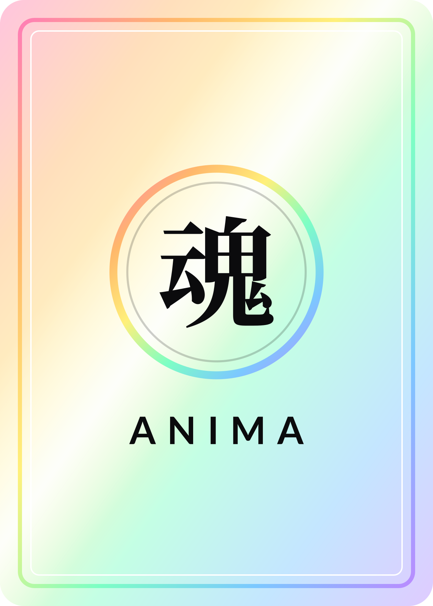
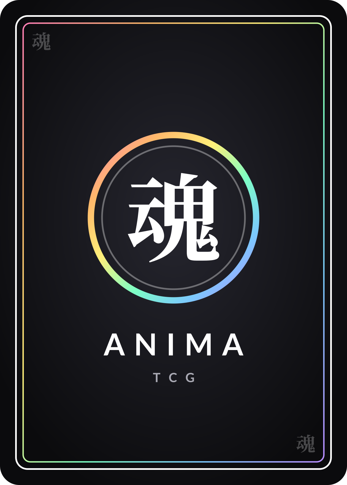
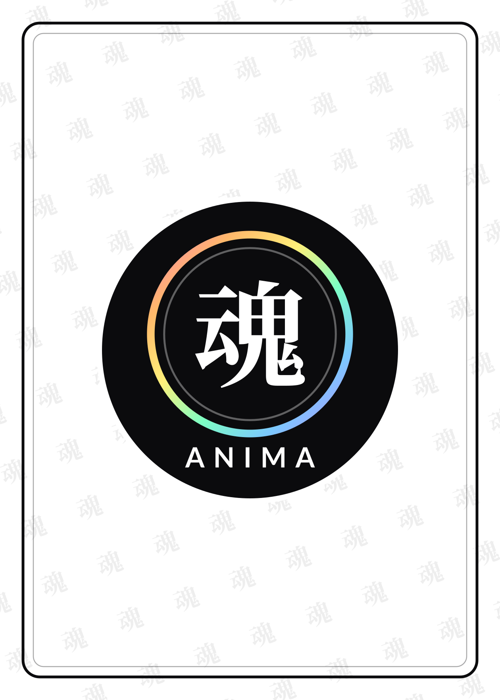
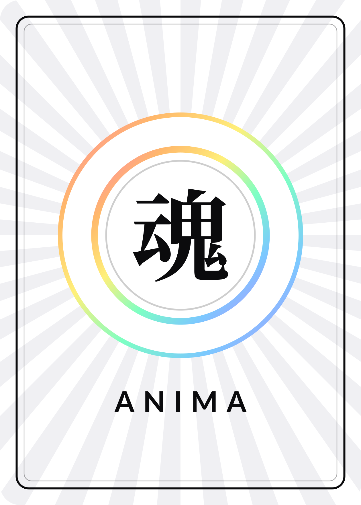
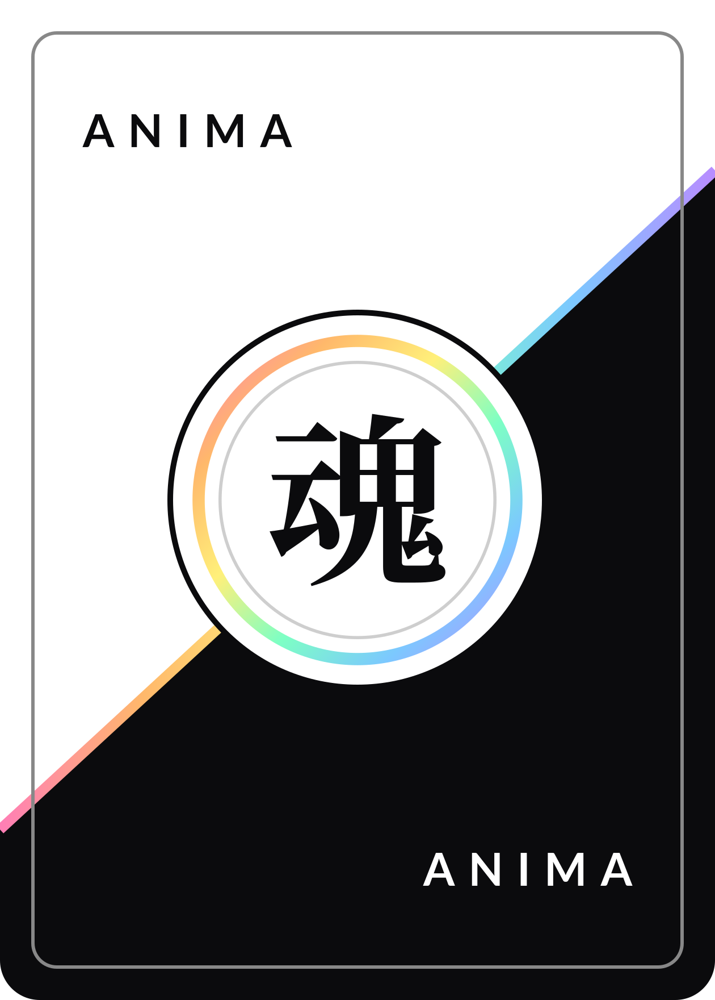

Dos des cartes : 6 modèles
Réponds avec un numéro (ou une combinaison).

1. Blanc épuréCarte blanche, double cadre noir fin, le logo au centre en noir avec son anneau prisma. Simple et élégant.

2. Blanc iriséCarte blanche traversée de reflets pastel irisés, comme une carte holographique ; cadre prisma.

3. Noir prismaCarte noire comme l'appli, lueur douce au centre, logo blanc, cadre blanc et liseré prisma.

4. Motif 魂Carte blanche couverte d'un motif discret de petits 魂 en biais, grand médaillon noir au centre.

5. RayonsCarte blanche à rayons gris très clairs, comme une explosion de manga, grand anneau prisma autour du logo.

6. DiagonaleMoitié blanche, moitié noire, séparées par un trait prisma ; le logo au centre, à cheval sur les deux.